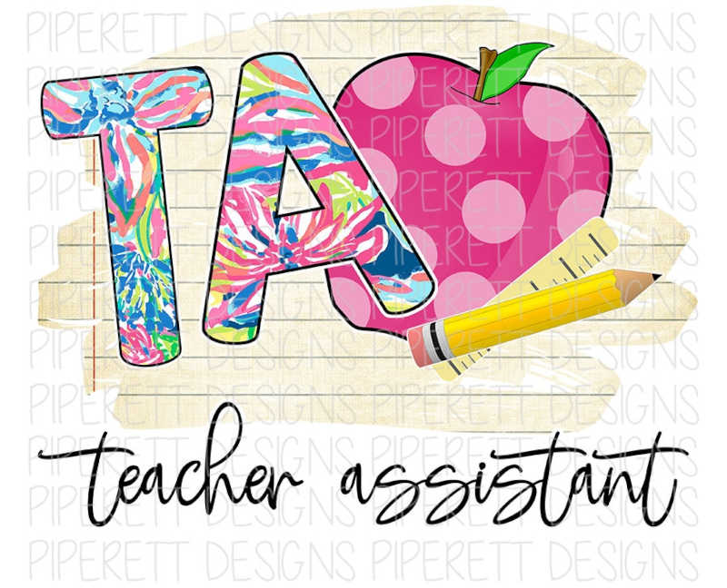

Experiences
Teaching assistance
I work as a teaching assistant at the University of Windsor, where I support professors and counselors in teaching computer science courses. My passion for education and computer science led me to take on this role, where I actively engage with students to enhance their learning experience. As a teaching assistant, I assist students with their assignments, providing individualized guidance and support. Additionally, I collaborate with the faculty in developing and executing lesson plans to ensure comprehensive coverage of course materials. I also maintain detailed records of students' progress, enabling me to provide personalized feedback and track their growth throughout the semester. Through my work as a teaching assistant, I strive to foster a positive and collaborative learning environment for students.
